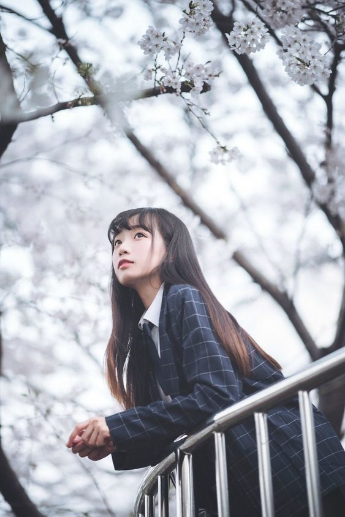

この画像には、桜の木の下で手すりに寄りかかりながら上を見つめる若い女性が写っています。彼女は長い黒髪を持ち、制服のようなチェック柄のブレザーを着ています。背景には満開の桜が広がり、全体的に春らしい穏やかで幻想的な雰囲気が感じられます。彼女の表情は優しく、何かを思い巡らせているように見えます。
- **画像** (がぞう, gazou) – Image, Picture
- **桜** (さくら, sakura) – Cherry blossoms
- **木** (き, ki) – Tree
- **手すり** (てすり, tesuri) – Handrail
- **寄りかかる** (よりかかる, yorikakaru) – To lean on
- **若い** (わかい, wakai) – Young
- **女性** (じょせい, josei) – Woman, Female
- **黒髪** (くろかみ, kurokami) – Black hair
- **制服** (せいふく, seifuku) – Uniform
- **チェック柄** (ちぇっくがら, chekku gara) – Checkered pattern
- **ブレザー** (ぶれざー, burezaa) – Blazer
- **背景** (はいけい, haikei) – Background
- **満開** (まんかい, mankai) – Full bloom
- **春** (はる, haru) – Spring
- **穏やか** (おだやか, odayaka) – Calm, Gentle
- **幻想的** (げんそうてき, gensouteki) – Fantasy-like, Dreamy
- **表情** (ひょうじょう, hyoujou) – Facial expression
- **優しい** (やさしい, yasashii) – Gentle, Kind
- **思い巡らせる** (おもいめぐらせる, omoimeguraseru) – To ponder, Reflect

この画像には、黒髪の女性がグレーのトップスを着てポーズをとっている様子が写っています。彼女の髪は長く、軽くウェーブがかかっており、両耳にはピアスがついています。背景には、小さな木にライトやオーナメントが飾られており、部屋の中の暖かい雰囲気が感じられます。女性はやや上を見つめる表情で、穏やかで落ち着いた雰囲気を持っています。
- **画像** (がぞう, gazou) – Image, Picture
- **黒髪** (くろかみ, kurokami) – Black hair
- **女性** (じょせい, josei) – Woman, Female
- **トップス** (とっぷす, toppusu) – Top (clothing)
- **ポーズ** (ぽーず, pōzu) – Pose
- **長い** (ながい, nagai) – Long
- **ウェーブ** (うぇーぶ, uēbu) – Wave (wavy hair)
- **耳** (みみ, mimi) – Ear
- **ピアス** (ぴあす, piasu) – Earrings
- **背景** (はいけい, haikei) – Background
- **木** (き, ki) – Tree
- **ライト** (らいと, raito) – Light
- **オーナメント** (おーなめんと, ōnamento) – Ornament
- **部屋** (へや, heya) – Room
- **暖かい** (あたたかい, atatakai) – Warm
- **雰囲気** (ふんいき, fun'iki) – Atmosphere, Mood
- **表情** (ひょうじょう, hyoujou) – Facial expression
- **穏やか** (おだやか, odayaka) – Calm, Gentle
- **落ち着いた** (おちついた, ochitsuita) – Composed, Relaxed

このイラストは『ジョジョの奇妙な冒険』シリーズに登場するキャラクターたちを描いたものです。背景は明るい黄緑色で、中心には帽子をかぶった青年が座っています。彼の周囲には、ストライプのシャツを着たキャラクターや、ゴーグルをつけた人物、そして特徴的なデザインの服を着た他のキャラクターたちがいます。いくつかのキャラクターの隣には、人間のようなポーズをとった白いスタンド（能力を持つ存在）が見えます。中央の背景には緑色の大きな顔のようなオブジェクトがあり、手前には紫色の石の仮面が置かれています。キャラクターの服装やポーズは個性的で、アートスタイルは独特な線と色使いが特徴的です。
- **画像** (がぞう, gazou) – Image, Picture
- **描く** (えがく, egaku) – To draw, depict
- **背景** (はいけい, haikei) – Background
- **帽子** (ぼうし, boushi) – Hat, Cap
- **青年** (せいねん, seinen) – Young man
- **周囲** (しゅうい, shuui) – Surroundings
- **服装** (ふくそう, fukusou) – Clothing, Outfit
- **特徴的** (とくちょうてき, tokuchouteki) – Characteristic, Distinctive
- **人物** (じんぶつ, jinbutsu) – Person, Character
- **能力** (のうりょく, nouryoku) – Ability, Power
- **存在** (そんざい, sonzai) – Existence, Being
- **緑色** (みどりいろ, midoriiro) – Green color
- **仮面** (かめん, kamen) – Mask
- **石** (いし, ishi) – Stone, Rock
- **独特** (どくとく, dokutoku) – Unique, Distinct